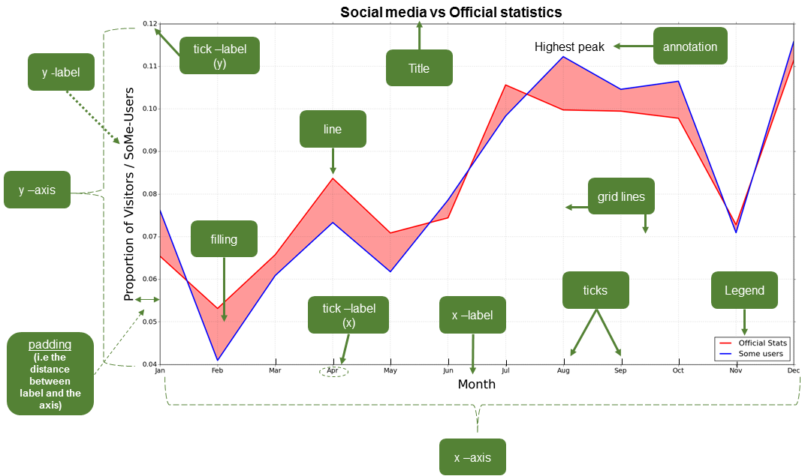

Plotting in Python
Contents
Plotting in Python#
Data visualization is an essential part of understanding and interpreting data, and Python has a large number of libraries available for use in visualizing different types of data. Below we provide a bried overview of some of the Python plotting landscape as well as an introduction to the terminology commonly used to refer to different parts of a plot created using Python.
Python plotting libraries#

Figure 4.1. Plotting libraries available in Python. Interactive version online at https://pyviz.org/overviews/index.html.
Python has many nice, useful libraries that can be used for plotting. In the figure above, you can see a number of the available plotting library options, along with how they relate to one another. Of the options above we would like to highlight the following:
Matplotlib 1: Matplotlib is one of the most widely used Python plotting libraries, sometimes referred to as “the grand old man of Python plotting”. Plot examples can be found in the Matplotlib gallery.
Matplotlib Basemap 2: The Matplotlib Basemap Toolkit is a plugin for visualizing maps in Python. Example plots available in the Matplotlib basemap gallery.
Seaborn 3: Seaborn is a high-level interface for drawing attractive statistical graphics that is built on top of Matplotlib. Example plots can be found in the Seaborn gallery.
Bokeh 4: Bokeh is a modern plotting library for static and interactive web-based plots including graphs, maps, and charts. Examples can be found in the Bokeh gallery.
Plotly 5: Similar in some ways to Bokeh, Plotly is a modern plotting library for static and interactive web-based plots. Some features are commercial. Example plots are available in the Plotly gallery.
Dash 6: Dash is a Python framework for building analytical web applications. No JavaScript required.
ggplot 7: ggplot is a Python plotting environment for those familiar with creating plots in R using ggplot2. You can use ggplot in Python too! Plot examples can be found in the ggplot examples.
HoloViews 8: and GeoViews 9: HoloViews and GeoViews aim to let the data visualize itself. Learn more in the HoloViews introductory video at https://www.youtube.com/watch?v=hNsR2H7Lrg0.
Both are modern and powerful visualization libraries built on top of Matplotlib and Bokeh that make exploring and visualizing your data quicker than ever before.
HoloViews is designed for basic plotting. More information available in the HoloViews tutorial and the HoloViews example plots.
GeoViews is designed for creating nice and interactive maps. Examples can be found in the GeoViews gallery.
You should explore the plotting galleries and examples of different visualization libraries above to learn what’s possible to do in Python. As you will see, the plotting possibilities in Python are numerous and rich. To get started, we suggest starting by learning to use one that suits your needs best, and later extending your knowledge and skills to other visualization libraries as necessary.
Anatomy of a plot#
There are a variety of different kinds of plots (also known as graphs, charts, diagrams, etc.) available that have been designed to visually represent the characteristics of a dataset. Here is a list of several different types of plots that can be used to present different kinds of data. You can find more information about this plots online in Wikipedia, for example.
However, before starting to visualize our data on a plot our data we need to address an obvious question: What actually is a plot? We will not go deep into the details of different types of plots such as those listed above, as it is not the purpose of this book, but rather we will provide a brief introduction to different plots that can be created using Python and the (essential) elements of a plot.

Figure 4.2. The basic elements of a plot. Image source: Tenkanen (2017).
In spite of the large variety of types of plots, there are certain elements that are common for most of them (not all). Thus, it is useful to know at least the basic terminology since it makes it easier to find help and information from the internet when you start creating or modifying your own plots. Figure 4.2 illustrates different elements of a basic line plot.
Common plotting terminology#
The common terms in Table 4.1 may vary a bit depending on the plotting library that you use. For the list provided here we are using the typical terms for plotting in Matplotlib (see also Figure 4.2).
: Table 4.1. Common terminology for plot features in Matplotlib.
Term |
Description |
|---|---|
Axis |
Axis of the graph that are typically x, y and z |
(for 3D plots). |
|
Title |
Title of the whole plot. |
Label |
Name for the whole axis (e.g. xlabel or ylabel). |
Legend |
Legend for the plot. |
Tick label |
Text or values that are represented on the axis. |
Symbol |
Symbol for data point(s) (on a scatter plot) that |
can be presented with different symbol shapes or |
|
colors. |
|
Size |
Size of, for example, a point on a scatter plot. |
Also used for referring to text sizes on a plot. |
|
Linestyle |
The style how the line should be drawn. Can be |
solid or dashed, for example. |
|
Linewidth |
The width of a line in a plot. |
Alpha |
Transparency level of a filled element in a plot |
(values range between 0.0 (fully transparent) to |
|
1.0 (no trasnparency)). |
|
Tick(s) |
Refers to the tick marks on a plot. |
Annotation |
Refers to the text added to a plot. |
Padding |
The distance between a (axis/tick) label and the |
axis. |